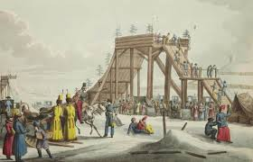
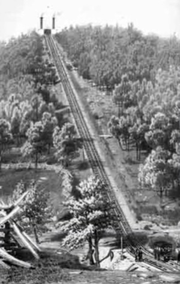
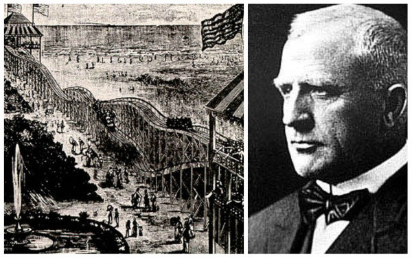

"La historia de las Montañas Rusas"

Los inicios de las Montañas Rusas nos llevan a muchos años atrás, donde el ser humano ha buscado distintas formas de sacar adrenalina.
Están los que hacían guerras, así como los que solo se deslizaban sobre un objeto en una superfice inclinada
En los climas fríos, la gente se deslizaba sobre la nieve con trineos, en las playas se subían en troncos y se dejaban llevar por las olas del mar y en climas templados, con carretillas se deslizaban sobre las colinas dejándose llevar por la gravedad hacia la base.
- Tobogán de hielo 
- La primer montaña rusa de Catalina la grande
- Gravity Road 
- LaMarcus Thompson y las montañas rusass modernas 
En el siglo XVI, dentro del imperio Ruso, se podían entregar estas planicies dentro de la región Siberiana
Se construian enormes estructuras de madera, algunas con colinas y curvas, en invierno era cuesyión de agregar agua para que se congelara y así la gente subía con un trineo y deslizarse a toda velocidad.
Para el siglo XVIII se volvieron muy populares, que se volvieron actividad típica de invierno, miembros de la realeza gustaban de estas atracciones.
Fue de los miembros de la realeza que era muy entusiasta de los toboganes de hielo.
Desde muy pequeña pasaba en San Peterburgo delizandose una y otra vez.
Tanta era la aficción de esta emperatriz por estas atracciones que mandó a construir varios en sus propiedades, dio a la tarea en idear un tobogán que pudiese trabajar todo el año
Los contratistas tuvieron complicaciones, pues debían idear como mantener el hielo todo el año y se les ocurrió construir un tobogán por medio de ruedas y moldear la madera para
que el trineo se mantenga dentro del carril, así es como nace la "Primer montaña rusa".
Aunque no es la primer montaña rusa a como la conocemos, gracias a este invento que en su lengua romance las conocemos por este nombre, pero la etimología corresponde a los franceses presentaron estas atracciones en todo Europa
como "La Montagne Ruse", quien rapidamente se puso en exposiciones, ferias y recintos de entretenimiento, donde la gente subía y gozaba de estas atracciones, pero en el nuevo mundo aún no eran conocidas.
En el continente Americano en el siglo XIX en pleno apogeo de la era industrial, las minas e insumos minerales se hicieron cada vez más necesarias en Estados Unidos
Los burros de carga y las personas eran insuficientes para llevar productos cuesta arriba y abajo cada que se necesitaba.
A los mineros se les ocurrió un sistema simple para tranportar los objetos basándose en los ferrocarriles, contruyeron dos vías de rieles que abarcabar de base a cima las montañas,
en cada carril había un vagón y ambos conectados por un largo cable y una polea en la cima de la montaña, para que así por inercía el vagón fuera llevado arriba o abajo.
Los valientes mineros no dudaron ni un segundo en subirse a los vagones de carga y sustituir a los elementoss de carga por humanos, descubrieron que era extremadamente divertido,
invitaban a las personas de los pueblos mineros a probar la idea, estos prototipos de transporte mineros fueron apodados "Gravity Road" o en español "Caminos gravitatorios", alejado a un paseo tranquilo
La gente pagaba para subir, detras de los vagones había un personal que se encargaba de frenar el vagón con una palanca para hacer el camino más ameno. Los ciudadanos viajaban grandes distancias para probar esta atracción.
En las grandes ciudades, el entretenimiento eran los bares, juegos de azar y el morbo de lso circos de fenónemos, LaMarcus era muy religiosa que quizo hacer una nueva forma de entretenimiento, sano y bien visto por los ojos de Dios,
se obsesionó con los "Gravity Road" en un viaje a Pensylvania, que se inspiró en ellos para crear una estructura que cumpliera con esas características, que se instalara fácilmente en playas y ferias y fue como formó la primer montaña rusa moderna "Switchback Railway",
serie de rieles, con subidas y bajadas donde recorrían de ida y vuelta, este invento se volvió muy popular en Estados Unidos.
En cada punto del mundo, cada quién creó su versión popular de una montaña rusa, con vagones y ruedas, pero aunque la idea comenzó en Rusia, allá le adjudican el invento a los americanos y la llaman "El tobogán americano". Mientras en estados unidos las llamaron "Roller Coaster" y nosotros
al compartir la lengua romance con los franceses la llamamos Montañas Rusas.
Con el tiempo se fueron agregando nuevos diseños y distintas formas de disfrutar de estas atracciones.